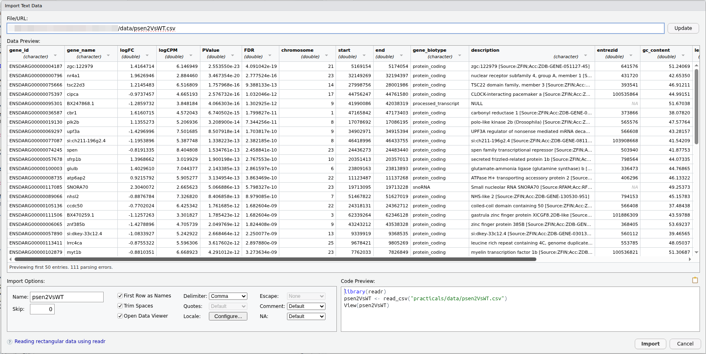
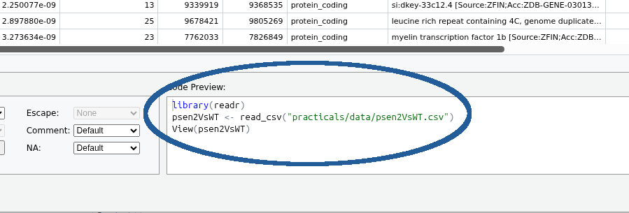

1 + 1
2 * 2
1 / 4
3 ^ 2Transcriptomics Practical
Practical 1: Introduction to R and R Studio
The Software Environment
Virtual Machines
The practicals that you will be participating in will make use of cloud compute resources that are provided by The University as a virtual machine (VM). The VM is basically a program that runs on a server but acts like a separate computer. You can log in to the VM and interact with the programs installed on it. The VMs provided each have 2 CPU cores, 16 GB of system memory, and 80 GB of hard disk space. They are yours to use for the semester, but you are also responsible for looking after them. The University hosts these VMs on AWS RONIN (Amazon Web Services) and pays by the minute for CPU time and storage. As a result, we have added an auto shutdown feature for VMs that stay idle for too long (idle means no jobs running or no user input).
Please go here for instructions on connecting to your VM.
Introducing R and RStudio
Introduction to R
What is R?
- R is an interactive programming language/environment in which code can be executed in real-time, or run as a stand-alone script
- Can be run on an HPC, a Virtual Machine (VM) or locally (on your laptop)
- Can be run from the terminal (Mac/Linux), stand-alone (Windows) or inside an Integrated Development Environment (IDE) on all platforms
- Grew from the statistical language
S(Bell Labs, 1976)- Redesigned in 1992 by Ross Ihaka & Robert Gentleman
- First public release R v1.0.0 in 2000
- One of the most widely used languages in biological research
- Also very heavily used across all data science disciplines
- Commonly requested skill for many job opportunities
Why we’re learning R
R skills are vital for the field of transcriptomics, as many of the tools and techniques developed for transcriptomics were built using R as the language of choice. In particular the Bioconductor Project, provides a huge range of packages for working with transcriptomics data, as well as other fields of bioinformatics.
The transcriptomics package limma was being widely used internationally by 2003, and is still both maintained and under active development. limma was written primarily by Prof Gordon Smyth, based in Melbourne at the Walter & Eliza Hall Institute (WEHI), who also developed many of the underlying statistical models for the analysis of both microarray and RNA-seq data. Prof Smyth has also contributed to the underlying code base which enables R, reinforcing that transcriptomics & R have developed hand-in-hand.
As such, learning basic R skills is an essential part of working with transcriptomics data and these first practicals are aimed at developing your skills quickly, and covering many essential concepts required for later practical sessions.
Why use R?
R offers considerable advantages over Excel, GraphPad Prism & the like:
- Complex, informative and visually-pleasing plots can be made
- We can easily handle extremely large datasets with millions of data points
- Complex analytic procedures become simple
- Many complex processes have been defined as functions
A key difference between R and Excel is that we (almost) never use a drop-down menu or click on anything. Instead we write code which R uses to perform a process, and we keep this saved as a script, or in other more modern formats. Importantly, when using R we have code to record and repeat our analysis. This enables highly reproducible (and reputable) research! This also helps us spot mistakes and identify points along the way where we may have gone wrong.
How do we use R
R can be installed on any laptop, and the most common way to interact with R is through the IDE called RStudio. When using RStudio, we can compare it to the cabin of a car, while R itself is like the engine. RStudio offers many extra features that are not directly related to R but make our journey much more enjoyable while working with R.
For these practicals, we have given you a Virtual Machine (VM), and we will use this to ensure minimal issues with the entire practical series. RStudio is how we will primarily interact with our VMs
Please go here for instructions on connecting to your VM.
R At It’s Simplest
Let’s have a quick look at R in its simplest form. To perform calculations or run commands directly, we can use the Console. In the top left corner, just below the blue ‘R’ logo, you can see the word Console. Click this and you will see the following text (or similar depending on your version):
R version 4.5.2 (2025-10-31) -- "[Not] Part in a Rumble"
Copyright (C) 2025 The R Foundation for Statistical Computing
Platform: x86_64-pc-linux-gnu
R is free software and comes with ABSOLUTELY NO WARRANTY.
You are welcome to redistribute it under certain conditions.
Type 'license()' or 'licence()' for distribution details.
R is a collaborative project with many contributors.
Type 'contributors()' for more information and
'citation()' on how to cite R or R packages in publications.
Type 'demo()' for some demos, 'help()' for on-line help, or
'help.start()' for an HTML browser interface to help.
Type 'q()' to quit R.Directly below this, you’ll see a flashing cursor next to the following symbol.
>(If the cursor is not flashing, click on this pane and it should start flashing.)
This is the R Console and this symbol is the prompt within an R session. We enter our code here, and can even use this as a simple calculator. Enter the following at the R prompt followed by Enter after each line, which will evaluate our ‘difficult’ calculations.
Mess around with a few more simple calculations, then move on to the next section.
Starting With R Studio
In the simple exercise above, we interacted directly with the R Console; however, most of the time we will use the RStudio Integrated Development Environment (IDE). As you’re probably aware, this is how we’ve logged into our VM, and this will be our main environment for the practical series.
Both R and R Studio can also be installed on your computer, and you may need to do this outside of this course. However, it will not be required for this course.
Creating an R Project
First we will set up an R Project for today’s practical. These are a simple way to manage your code for multiple analyses or datasets, and are always named after the directory they are in. These are not essential, but are very useful and make good practice. If you don’t follow this step, you will be making your life immeasurably harder and will not be following ‘best practice’ for R.
In the middle of the screen (at the top of a pane called Files) you will see the home icon ( ). Click on this and you’ll notice that the Files Pane will have taken you to your “home” folder on the VM.
). Click on this and you’ll notice that the Files Pane will have taken you to your “home” folder on the VM.
Now you’re in the home folder where we can place all our practical sessions, click on  directly above this and call this folder
directly above this and call this folder introduction_to_r.
Important
Please ensure you spell introduction_to_r correctly, including all underscores. It is important when using scripting languages never to use spaces in the names of files or folders, so please get into the practice of following this rule from now on!
This is where we’ll run everything for today’s session. To make an R Project for this folder use the following commands in the menu bar at the top of your R Studio session:
1. `File` > `New Project`
2. When asked if you'd like to `Save Current Workspace`, choose `Don't Save`.
3. Choose `Existing Directory` >
+ Browse to `introduction_to_r`
+ `Choose`
+ `Create Project`
You will now find yourself in the introduction_to_r folder we have created. If you look at the top right of your RStudio session you will also see introduction_to_r and an arrow for the drop-down menu with all the R Projects you have listed.
We only have one project at this point, but this is where you can switch between projects as we go through multiple practical sessions. For this practical series, we’ll start a new project for every session. This will help you keep everything organised so you can find everything later.
Take Care Managing Your Data
Managing your data and code intelligently is a considerable challenge in bioinformatics, so it is important to be organised from the beginning! Analyses can get complex surprisingly quickly so it’s good to get into the habit of being well-organised early.
The final step is to copy the data we have provided for this practical into your introduction_to_r folder. It’s best practice when using R Projects to keep all data, scripts, outputs, reports within the R Project folder for maximum portability and reproducibility.
The provided data is in the folder ~/data/intro_r within your Home folder on the VM (the ~/ part here expands to your system Home folder, which on the VM expands to /shared//aXXXXXXX). We want to preserve the original folder structure, so we will copy it rather than move it. We can do this using the Terminal (command line), or we can use the Files pane in RStudio. We will keep things simple for now and use the Files pane as follows:
1. Click on the `Files` tab in the bottom right pane of RStudio.
- Ensure you are in the `~/introduction_to_r` folder
2. Click on the new folder icon (looks like a folder with a plus sign) to create a new folder.
- Name this folder `data`
3. Click on the `Home` icon (looks like a house) to go to your home folder.
4. Navigate to the `~/data` folder within `Home`.
5. Click on the box next to the `intro_r` folder to select it.
6. Click on the `More` button in the top right of the Files pane.
7. Select `Copy To` from the drop-down menu.
8. Click `Home`, then double-click 'introduction_to_r`, and then click `data`.
9. In the `File name` box type `intro_r` and select `Save`
- This will copy the `intro_r` folder into your `introduction_to_r/data` folder.Great, the data is now in your introduction_to_r/data/intro_r folder! Now we are ready to start using R and RStudio.
Creating an R Script
Instead of just entering commands into the console, we can enter our commands into a text file, known as a script, and execute them from this file. This enables us to keep a complete record of everything we have done in complex analyses. Sometimes, we even publish these as part of a research paper.
Let’s create a blank R Script. Using the RStudio menu:
File > New File > R ScriptSave this as Introduction.R.
Your screen should now look like the following (without the blue text):

Let’s take a tour through the various panes and tools within RStudio.
The Script Window
This is just a plain text editor. As you may expect, these are just plain text files we use to save our code. We can’t format these like we might an MS Word document, but RStudio will highlight a few attributes just to make your time spent in RStudio a little easier.
We usually enter our commands here but they are not executed when we type them. Instead we type plain text then send it to the Console to be executed. (It’s like typing an email before hitting send, except we can send individual sentences as soon as we type them)
This pane is where we keep a record of everything we’ve done. We’ll return here later and will spend most of our time here
The R Console In RStudio
This is where we can execute commands directly, as we’ve already seen in our first experiment with using a calculator.
The R Console is essentially the engine that performs all the analysis and gets us to our destination.
As well as the R Console, RStudio also provides a Terminal which we have already used to change our password. We’ll also spend a fair bit of time here throughout the course.
As well as performing simple calculations in the Console, as we’ve already done:
Rhas what we call anEnvironment(i.e. a Workspace)- We can define objects here, or import data
- These are like a worksheet in Excel, but much more flexible & powerful
Robjects are also similar to variables in many other programming languages
Rperforms calculations & runs processes on these objects.
To create an R object we need to give it a name, and some data. This is surprisingly just like when we create a Spreadsheet in Excel. When we create a new sheet in an Excel workbook, Excel will automatically name it **Sheet1*, before we start entering any data.
In R we get to make the decision as to what we’ll call an object, and the process looks like nameOfObject <- data
- The
<-symbol is like an arrow, and is often called “The Assignment Operator” - Tells
Rto put thedatain the object, just like an arrow might be expected to do
To see this in action, type the following directly in the R Console
x <- 5- We have just defined an object called
x - View the contents of the object
xby entering it’s name directly in theConsole, or by callingprint().
x
print(x)
Caution
It is good practice to use the script window rather than interact directly with the Console as it can be directly saved for future use and easily edited. We’ll start being a bit more formal once we move beyond trivial actions.
The R Environment
Important
Where have we created the object x?
- Is it on your hard drive somewhere?
- Is it in a file somewhere?
Answers
The object is in our R Workspace (or Environment). We can save our R Environment if we wish to keep all of our objects. Generally in R, we don’t as we instead keep our code for generating, or working with these objects.We have placed x in our R Workspace, which is more formally known as your Global Environment.

The Environment pane shows us which objects are currently in our R Environment. The Environment is very much like the desk in your study (or bedroom) where we can have things spread and piled up everywhere. In the R Environment, we can create objects of multiple types. Once an object is in our Environment we can perform calculations on it. Using the object x we created as an example:
1 + x
x^2
Warning
R is case sensitive. If you accidentally type X instead of x you will get an error message
Accessing Help Pages
R has a series of in-built functions, e.g. sqrt(), log(), max(), min() etc. loaded into your Environment. We place an object or value inside the () after the name of a function - these are the arguments to the function.
sqrt(x)
log(x)Many in-built functions are organised into a package called base which is always loaded and installed with R
Packages group similar/related functions together and are stored on either The Comprehensive R Arichive Network (CRAN) or The Bioconductor Project which hosts packages exclusively for bioinformatics. Currently, there are >22,000 R packages on CRAN and another 3500 on Bioconductor.
Packages are usually named by developers to provide a lighthearted way to remember what they do, with some well known examples being
limma: Linear Models for Microarray AnalysisedgeR: Empirical analysis of Digital Gene Expression data in Rggplot2: Create Elegant Data Visualisations Using the Grammar of Graphicspheatmap: Pretty heatmaps
Every function in R comes with a help page, with some being excellent and others being less so. They’re always written by the package authors and some authors have a knack of explaining things well, whilst for some functions the technical knowledge required can be difficult to explain. Typing a single question mark followed by the name of a function will take you to the help page. To see an example of a help page enter the following in the Console
?sqrtSome of this should make sense to you already, whilst some of the content is more technical. Importantly, you’ll notice that the function sqrt() has one argument defined as x which is just a common way of saying “this can be anything”.
Underneath the Usage section you’ll see the Arguments section which describes what x can be. It’s a bit technical, but we’ll soon understand this.
Writing Code In The Script Window
Now that we’ve finished our “grand tour” of RStudio, let’s start writing a script and seeing how things really work.
Best Practice for Writing Code
Best practice for all analysis is to enter every line of code in the Script Window, then send the code to the R Console. We’ll start with fairly trivial code, then will move to more real-world examples.
The Script Window is a plain text editor, however RStudio will:
- highlight syntax for us
- help manage indenting
- enable auto-completion (it’s a bit slow & unhelpful sometimes though)
Given that we enter code in this window and send it to the R Console, an R Script forms an important record of what we’ve done, and these are very widely used in bioinformatics, as well as forming an essential part of record keeping for the publication of papers.
When writing code, we can write comments by starting a line with the #. Anything following this symbol will not be executed and these can make a good way to communicate with collaborators, or to remind ourselves of important considerations that were on our mind as we crafted our code and made important decisions.
The # symbol can actually appear anywhere in a line, however anything after this symbol will be ignored by the R Console.
To see how this works enter the following in the Script Window but don’t do anything else. (You can copy & paste if you’d like)
## Create an object called x
x <- 1:5We’ve only written plain text as this point and R has not executed anything. To send this to the Console:
- Place the cursor on a line then
Ctrl+Enter(Cmd+Enteron OSX), or - Select the lines using the mouse then
Ctrl+Enter(Cmd+Enteron OSX) - Or after selecting the line(s) you can click the
Runbutton
As well as creating objects, we can use this to write general code. Enter the following in your script, then send it to the R Console.
## What do we have in the object `x`
print(x)In R, this type of object is known as a vector, and this is quite similar to a single column in Excel. We can perform operations on an entire vector. Again, type this into your script window, then send it to the Console
## I'm not sure. Which values are greater than one?
x > 1As well as a logical test, we can perform mathematical operations on a vector.
## Let's square every value in `x`
x^2
## And we can find the square root of every value
sqrt(x)We’ll learn more about vectors later, but this idea of having multiple values in an object and performing a simple operation on them is one of the key design features of R that gives it it’s power.
Note
If you tried performing the above operations in Excel, you’d need to create a new column, then enter the formula, then fill down to transform every one of your original values in a new column. Here we just perform the calculations with a single command, and with datasets that regularly have hundreds of thousands or millions of data points, we can literally perform millions of calculations with great ease, very, very quickly.
If you’ve ever learned another language like C, JavaScript or python, you’ll also notice that we didn’t have to iterate through the entire set of values, we just performed the operation simply with a single line.
Other Features of RStudio
To finish our grand tour, there are a few more features which can be quite helpful as we work with R.
Tab Auto-completion
RStudio will give us suggestions when we ask it to.
- In either the Console or Script Window type
?basthen wait for about half a second- A whole lot of options will appear
- Very handy with long variable/function names
- If you can’t quite remember the spelling
- Can sometimes (inappropriately) complete when you don’t want it to
The History Tab
- Next to the
EnvironmentTab is theHistoryTab- Contains everything executed in the
Console - Useful for when we’ve been lazy
- Contains everything executed in the
- Best coding practice is to enter code in the
Script Windowand execute
Resizing Windows
- Every tab can also be resized using the buttons in the top right
- Window separators can also be be moved
Importing Data
Now that we’ve oriented ourselves and had a guided tour of RStudio, let’s move straight to real data. The first thing we might like to do is import some data and explore the data in R. We’ll start with some RNA-Seq results taken from analysis of a mutation in the Alzheimer’s-associated gene psen2 using a zebrafish model (Jiang et al. 2020). These are the results from an RNA-Seq analysis as published.
Caution
You should already have the file psen2VsWT.csv in your directory data and we’ll be assuming that location for the next few stages of the practical. If you don’t have the file in that location and can’t find it anywhere else, call a tutor over
Note
Hopefully you’re familiar with a csv file, but these are just like a single Excel worksheet, but without any formatting or formulas, and with columns separated by commas.
Before we begin the actual import process, we need to create a new R Script called data_import.R
1. Go to the File menu
2. Select New File
3. Choose R Script
4. Save the file as data_import.RUsing the GUI
We’ll start bringing data into R using the GUI (Graphical User Interface) which is a great starting point. Navigate to the data folder and click on the file psen2VsWT.csv. You’ll see two options, and make sure you select Import Dataset. A GUI as below should open so please read on before doing anything further. We want to look at what we have in the GUI first.

In the main frame of the GUI you can see a section called Data Preview which gives us a preview of what the data looks like. In the bottom right hand side you should also see three lines of code.

Important
Select and copy all three lines of this code!!
(We’ll paste this shortly)
Once you’ve copied that code, click the Import button and magic will happen! Ignore any “helpful text” that may appear in your R Console.
**Now paste these three lines at the top of your data_import.R script.
What Just Happened
The code we copied has three lines
- The first line loaded the package
readr. This is usually done by placing the package name insidelibrary()as you are loading a library of functions - The second line called a function
read_csv()and inside the brackets was the name of our file. The output of the functionread_csv()was also saved as the objectpsen2VsWT, which the GUI guessed by just dropping thecsvsuffix. - The third line called an interactive function
View()which opened an Excel-like preview of the data
As you may realise, the first two lines were the important lines as they loaded the important package readr which has a range of functions explicitly written to read data into R (hence the name). The second line actually performed the importing and created a new R object. The third line opens a simple data preview which some people prefer. Once we’ve looked at the data once, we don’t really need to look at it any more, we’ll use the R Console for that.
Pasting that code is our first taste of reproducible research. Let’s delete the object psen2VsWT from our R Environment using the broom icon in the Environment pane. You’ll notice there are no longer any objects in the Global Environment once you’ve clicked this.
Now highlight the three lines of code you have pasted in your script and send them to the R Console. Amazingly, the object psen2VsWT has been recreated and the View window has opened again. We can do this as many times as we want!
Tip
Now we’ve seen the data using View() we don’t need to keep repeating the opening of that preview. Either delete the line, or comment it out by placing a # at the start of the line. Now clear your environment and run the lines again. This time the preview won’t open.
This is truly our first R Script and the process is now reproducible. We don’t need to use the GUI again for this dataset because we have the code it will execute anyway. Let’s tidy it up a little bit to develop our coding skills
Insert a new line before library(readr) and add
## Load packages firstThis is a comment with no executable code but which communicates to “future” you what you’re doing. (A comment only needs a single #, but sometimes we use two so we don’t accidentally un-comment the line.)
Insert a line after library(readr) then enter
## Now load the file "psen2VsWT.csv"Data Frame Objects
The type of object we created as psen2VsWT is known as a data.frame. These are very similar to an SQL table and are effectively the R equivalent to a spreadsheet. There are a few rules about them though:
- They must have column names
- Each column must contain the same type of data
- If there were any blank cells (there aren’t) these would have been loaded as
NAwhich is R’s way of encoding missing values
We can actually preview the object just by typing it’s name
psen2VsWT# A tibble: 16,021 × 15
gene_id gene_name logFC logCPM PValue FDR chromosome start end
<chr> <chr> <dbl> <dbl> <dbl> <dbl> <chr> <dbl> <dbl>
1 ENSDARG00… zgc:1229… 1.42 6.15 2.55e-23 4.09e-19 chr21 5.17e6 5.17e6
2 ENSDARG00… nr4a1 1.96 2.88 3.47e-20 2.78e-16 chr23 3.21e7 3.22e7
3 ENSDARG00… tsc22d3 1.21 6.52 1.76e-16 9.39e-13 chr14 2.80e7 2.80e7
4 ENSDARG00… cipca -0.974 4.67 2.58e-16 1.03e-12 chr17 4.48e7 4.48e7
5 ENSDARG00… BX247868… -1.29 3.85 4.07e-16 1.30e-12 chr9 4.20e7 4.20e7
6 ENSDARG00… cbr1 1.62 4.57 6.74e-15 1.80e-11 chr1 4.72e7 4.72e7
7 ENSDARG00… plk2b 1.14 5.21 3.21e-14 7.34e-11 chr8 1.71e7 1.71e7
8 ENSDARG00… upf3a -1.43 7.50 8.51e-14 1.70e-10 chr9 3.49e7 3.49e7
9 ENSDARG00… si:ch211… -1.20 5.39 1.34e-13 2.38e-10 chr8 4.64e7 4.64e7
10 ENSDARG00… spen -0.819 8.40 1.53e-13 2.46e-10 chr23 2.44e7 2.45e7
# ℹ 16,011 more rows
# ℹ 6 more variables: gene_biotype <chr>, description <chr>, entrezid <chr>,
# gc_content <dbl>, length <dbl>, LR <dbl>This gives a preview up to 10 lines with:
- The object type:
A tibble - The full dimensions:
16,021 × 15 - The column names:
gene_id,gene_name,logFCetc- Any extra columns which don’t fit in your Console width are given as names at the bottom
- The column data types:
<chr>, <chr>, <dbl> etc
Most experiences users find this more informative than View() as you get just enough information to know what you actually have.
Note
Whilst we introduced this object as a data.frame you might have noticed the object type was printed as a tibble. A tibble is an extension of data frame objects that prints nicely to your Console like we just noticed. They add one key rule though, and that is that tibble objects can only have row-names 1, 2, 3 etc in that exact order.
Understanding Functions
A common function in R is head() which we can use to inspect the top few lines of a data frame. There’s a corresponding function tail() which will show us the last few lines as well.
head(psen2VsWT)Let’s look at the Help page
?head(If you get multiple options, choose the one from utils)
The important place to look at is, and in particular we’ll look at the one following ## Default S3 method:
head(x, ...)
## Default S3 method:
head(x, n = 6L, ...)As you can see, there are two arguments to head(): x and n
xhas no default value \(\implies\) we need to provide somethingn = 6Lmeansnhas a default value of6(Lis shorthand for an integer)
Hopefully this helps explain why 6 rows were printed to the Console.
Lower down the page you’ll see
Arguments
x an object
n an integer vector of length up to dim(x) (or 1, for non-dimensioned objects). Blah, blah, blah…
Some of the rest is technical detail (can sometimes be very helpful)
head() prints the first part of an object which can be useful very large objects. We can change the number of rows shown to us by choosing a different number instead of 6
head(psen2VsWT, 4)# A tibble: 4 × 15
gene_id gene_name logFC logCPM PValue FDR chromosome start end
<chr> <chr> <dbl> <dbl> <dbl> <dbl> <chr> <dbl> <dbl>
1 ENSDARG000… zgc:1229… 1.42 6.15 2.55e-23 4.09e-19 chr21 5.17e6 5.17e6
2 ENSDARG000… nr4a1 1.96 2.88 3.47e-20 2.78e-16 chr23 3.21e7 3.22e7
3 ENSDARG000… tsc22d3 1.21 6.52 1.76e-16 9.39e-13 chr14 2.80e7 2.80e7
4 ENSDARG000… cipca -0.974 4.67 2.58e-16 1.03e-12 chr17 4.48e7 4.48e7
# ℹ 6 more variables: gene_biotype <chr>, description <chr>, entrezid <chr>,
# gc_content <dbl>, length <dbl>, LR <dbl>
Important
If passing function arguments in order, we don’t need to name them. Try the above example but naming the arguments
head(x = psen2VsWT, n = 4)If we choose to name arguments, we can actually provide them in any order. The following will give identical results.
head(n = 4, x = psen2VsWT)This becomes very important when calling functions like read_csv() which have a very large number of arguments. Check the help page ?read_csv
You’ll see a few functions, but jump to read_csv() and you’ll find
read_csv(
file,
col_names = TRUE, col_types = NULL, col_select = NULL,
id = NULL, locale = default_locale(),
na = c("", "NA"), quoted_na = TRUE,
quote = "\"", comment = "",
trim_ws = TRUE,
skip = 0, n_max = Inf,
guess_max = min(1000, n_max),
name_repair = "unique",
num_threads = readr_threads(),
progress = show_progress(),
show_col_types = should_show_types(),
skip_empty_rows = TRUE,
lazy = should_read_lazy()
)Now we know how to pass arguments by name, we could change any of these and really mess up our data. We didn’t see it at the time, but all of these have check-boxes or places to change them in the GUI. Try opening the GUI again and change some things randomly to see how the code changes. It doesn’t matter if you accidentally import the object again, because we’ve already saved our code to import the data correctly
Subsetting Data Frames
As our final task for the session, we’ll learn how to dig a little deeper into the data we’ve loaded, before doing a full exploration over the next few practical sessions. We’ve already seen how to print the top or bottom of the object using head() and tail(), but we can also print subsets by placing the square brackets after the object name
If we wanted to choose the first 3 rows, we can place 1:3 inside the square brackets, before the comma
## Select the first 3 rows by placing the numbers before the comma
psen2VsWT[1:3, ]We can select columns by placing our selection after the comma.
## Select the first 3 columns by placing our selection after the comma
psen2VsWT[, 1:3]Unlike rows (which have no useful names in a tibble), we can also select columns by name
## Select the first column by position
psen2VsWT[, 1]# A tibble: 16,021 × 1
gene_id
<chr>
1 ENSDARG00000004187
2 ENSDARG00000000796
3 ENSDARG00000075666
4 ENSDARG00000075397
5 ENSDARG00000095301
6 ENSDARG00000036587
7 ENSDARG00000019130
8 ENSDARG00000069297
9 ENSDARG00000077087
10 ENSDARG00000074245
# ℹ 16,011 more rows## Select the first column by name
psen2VsWT[, "gene_id"]# A tibble: 16,021 × 1
gene_id
<chr>
1 ENSDARG00000004187
2 ENSDARG00000000796
3 ENSDARG00000075666
4 ENSDARG00000075397
5 ENSDARG00000095301
6 ENSDARG00000036587
7 ENSDARG00000019130
8 ENSDARG00000069297
9 ENSDARG00000077087
10 ENSDARG00000074245
# ℹ 16,011 more rowsWe can also select individual columns by placing the $ symbol after the object name, the entering a column.
## Select an entire column as a vector
psen2VsWT$gene_nameNotice that we’ve just printed >16,000 gene names to our Console. This is where head() would come in very handy.
head(psen2VsWT$gene_name, 10)
Vectors
These last two lines where we’ve printed gene names have revealed an important structure. Each column in a data.frame (or tibble) is what we refer to in R as a vector. These are one-dimensional sets of values, which are all of the same type, and the gene_name column is a vector of character values. We can see this when ever we print the object as <chr> printed up the top of the column.
Vectors are very much like an single column in an Excel spreadsheet, but with the additional criteria that all values must be the same type: logical, integer, numeric (aka double), character or factor. If you print psen2VsWT you’ll see these types printed at the top of each column.
For vectors, we can also use the square brackets to obtain a subset of values. However, given that they only have one dimension, there’s no need for the comma inside these brackets.
psen2VsWT$gene_name[1:3]Vectors
So far, we’ve only selected columns using names or the shorthand 1:3. This value 1:3 actually creates an integer vector with the values 1, 2, and 3
1:3[1] 1 2 3We can actually create vectors of non-consecutive integers (or any other data type) using the function c() which combines individual values (which are also vectors) into a larger vector
c(1, 3, 5)[1] 1 3 5We can use this trick to select columns in any order
psen2VsWT[, c(1, 2, 3, 5)]
Important
Vectors actually underpin the entire R programming language so this small section is very important. Hopefully it made sense. Please ask questions if something isn’t quite sitting with you.
It’s also important to notice that when we called psen2VsWT[, c(1, 2, 3, 5)] we created a vector c(1, 2, 3, 5) but without saving it or giving it a name. We just made it “on-the-fly” and used it for that brief moment is was important to us. This strategy is also very common in R
There’s a vector called euro that lives in your R Environment so let’s quickly look at that as our final task. It actually contains the exchange rates from all of the different European currencies at the time the Euro was launched.
euroWe can apply the square brackets approach to extract the values we want
euro[1:3]You may have noticed that these values have names and we can also call values by name.
euro["BEF"]If we wish to call multiple values using the names, we can create a character vector “on-the-fly” to just grab out the values we want. The function c() is designed especially for this type of operation
euro[c("DEM", "ATS", "FIM")]
Tip
If possible, calling values by name is preferable because it’s easier to read. If the order of values has changed within the vector, as often happens, we’ll still call the intended values, so it’s a more robust strategy.
Finally, there’s a neat trick with c() where if you give it nothing, it returns the value NULL which is the empty value. Try this & see what happens.
c()
euro[c()]This has returned an empty vector of the same type (named numeric()), but this leads to a more formal definition of a vector in R.
A vector is zero or more values of the same type
So we can declare what type of values should be there without placing any values. Ask a tutor if this confuses you at all.
There are 6 atomic vector types in R
logical: Can only containTRUEorFALSE(orNAif missing)integer: Can only contain integers, or whole numbers (or missing values…)numeric: Contains numbers with values after the decimal point.- In the early days of computing there were single and double precision values, which allowed for fewer or more values after the decimal point respectively. Whilst R usually uses the term
numeric, the more correct name would bedoubleand there is a shift towards doing that in the R community
- In the early days of computing there were single and double precision values, which allowed for fewer or more values after the decimal point respectively. Whilst R usually uses the term
character: Contains plain text
There are two more that we’ll almost never see, but for the sake of being complete, these are
complex: Can contain complex numbers such as \(\sqrt{-1}\)raw: Contain raw bytes
References
Jiang, Haowei, Stevie Pederson, Morgan Newman, Yang Dong, Karissa Barthelson, and Michael Lardelli. 2020. “Transcriptome Analysis Indicates Dominant Effects on Ribosome and Mitochondrial Function of a Premature Termination Codon Mutation in the Zebrafish Gene Psen2.” PLOS ONE 15 (7): 1–25. https://doi.org/10.1371/journal.pone.0232559.